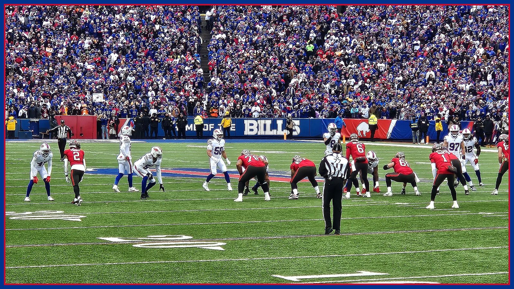

Why Buffalo's defense gives up yards but not Sundays
31st in yards, 5–1 in the standings. We break down the bend-don't-break math behind Jim Leonhard's defense — and the one drive per game where it almost breaks.

Here is the riddle of the 2026 Bills: the defense ranks 31st in yards allowed, and the team is 5-1. Both things are true, both things matter, and the space between them is where Jim Leonhard's defense actually lives. If you only read the yardage ranking, you'd conclude this unit is a disaster propped up by Josh Allen. The film tells a more uncomfortable story — for opponents.
Start with the philosophy. Leonhard's defense is built to defend space in layers, not to win every snap. The structure concedes the cheap stuff — the six-yard completion, the four-yard run — in exchange for taking away the explosive play that flips a game in one snap. Offenses can absolutely drive on this defense. What they find, over and over, is that driving 80 yards without a mistake is a different skill than driving 40.
That's the math people miss. Every additional play in a drive is another chance for a penalty, a drop, a tipped ball, a protection bust. Long drives against this defense die of a thousand cuts more often than they end in touchdowns, and the scoreboard — the only stat that has Buffalo at 5-1 — reflects it. Yards are a volume stat. Points are a verdict. This defense keeps winning the verdict.
The second piece is situational. Watch what happens when the field shrinks. In open field, Buffalo's coverage can look soft, almost indifferent. Inside the opponent's final 30 yards, the picture changes: the windows close faster, the rush gets home quicker, and the margin for an offense's error disappears. A defense that looks the same everywhere is a defense that can be solved. This one changes its personality when the game gets expensive.
Now the honest part, because Film Room doesn't do propaganda: there is usually one drive per game where the structure genuinely wobbles. A miscommunication, a substitution caught late, a series where the rush and the coverage aren't married up — and suddenly an offense is walking down the field like the first three quarters were a rumor. Against playoff-caliber quarterbacks, that one drive is the season. It's the thing that has to get fixed, and the bye week was the time to fix it.
Sunday's test is a strange one: a Baltimore offense whose quarterback is expected back but has described himself as restricted. A limited Lamar Jackson tests exactly what this defense is built to do — rally, tackle, and make an offense earn every yard over twelve plays instead of two.
So no, the 31st ranking isn't fake, and it isn't the whole truth either. This defense gives up yards by design and Sundays by accident. Six games in, the design is winning. January will grade the final exam.
The BNC Blitz is free: the day's Bills news, one stat that matters, and one take, every morning. Join to keep reading — and never miss the end of a story again.